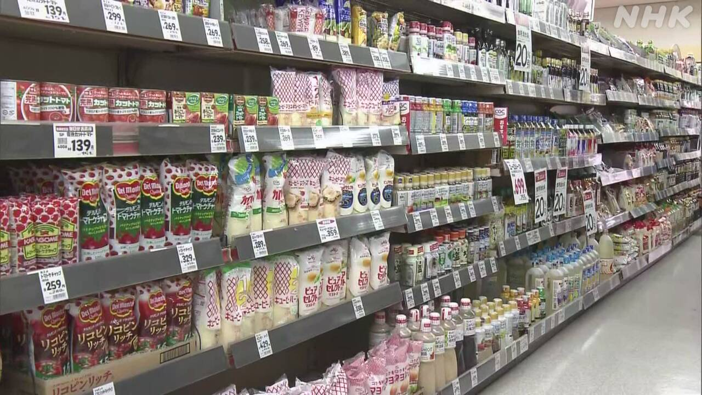
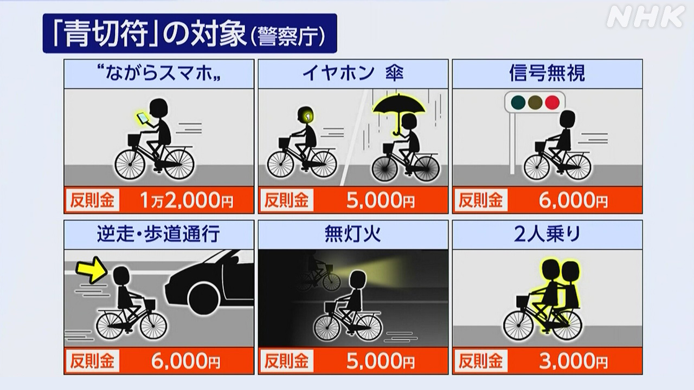

最新ニュース
1️⃣ 4月にたくさんの食べ物や飲み物の値段が上がる

また食べ物や飲み物の値段が上がります。
帝国データバンクという会社が調べると、4月に2798の品物の値段が上がることがわかりました。その中でいちばん多いのは、マヨネーズやドレッシングなどの「調味料」です。次に多いのは、簡単に作ることができるラーメンやうどん、スープなどです。そして、お酒や飲み物の値段も上がります。
理由は、材料や運ぶためのお金などが高くなっているからです。
調べた会社は「イランなどで戦いが続くと、これから値段はもっと上がるかもしれない」と言っています。
2️⃣ 原油が高くなってプラスチックや食べ物の値段も高くなりそう
アメリカとイスラエルがイランへの攻撃を始めてから、原油の値段が上がっています。このため原油から作る品物も、値段が上がりそうです。
大阪の会社は、原油から「発泡ポリスチレンシート」というプラスチックをたくさん作っています。その値段を、4月21日から1kgで120円高くすると言いました。
このプラスチックは、食べ物をのせるトレーなどの材料になります。トレーなどをたくさん使うスーパーや店で、物の値段が高くなる心配があります。
プラスチックの会社は「これからもっと値段を上げなければいけなくなるかもしれない」と話しています。
3️⃣ 自転車の交通違反 お金を払わなければいけないかもしれない

4月1日から自転車で交通ルールに違反した人は、お金を払わなければいけないかもしれません。
▽スマートフォンを使いながら運転すると1万2千円。
▽信号を守らないと6000円などです。
自転車が関係する交通事故が多いためです。
警察庁によると、警察は違反を見たらまず注意します。お金を払ってくださいといつも言うわけでありません。そして「ルールを守って安全に自転車を使ってほしい」と言っています。
4️⃣ 「江戸東京博物館」が新しくなった
東京にある「江戸東京博物館」が新しくなりました。
建物などが古くなったため4年前から工事をしていましたが、31日オープンしました。
江戸東京博物館は、江戸時代から今まで400年ぐらいの東京の歴史を紹介しています。
江戸時代の人たちが歌舞伎などを楽しんだ建物の中に入ることができます。
明治時代に有名だった銀座の「服部時計店」の建物は同じ大きさで作られています。
見に来た女性は「新しくなるのをずっと待っていました。今の東京しか知らない孫たちにもぜひ見てもらいたい」と話していました。
- 〜という
- 〜こと
- 〜や〜など
- 〜など
- 〜中
- 〜ことができる
- 〜から
- 〜ため
- 〜ている / 〜でいる
- 〜かもしれない / 〜かもしれません
- 〜てから
- 〜そうだ
- 〜になる
- 〜がある / 〜がいる
- 〜いけない
- 〜なければいけない
- 〜ながら
- 〜ず / 〜ずに
- 〜によると
- 〜わけ
- 〜てください / 〜でください
- 〜まで
- 〜から〜まで
- 〜くらい / 〜ぐらい
- 〜ても / 〜でも
- 〜しか〜ない
- 〜てもらう / 〜でもらう
vebaev.github.io
Generated: 2026-03-31 11:52:20 UTC